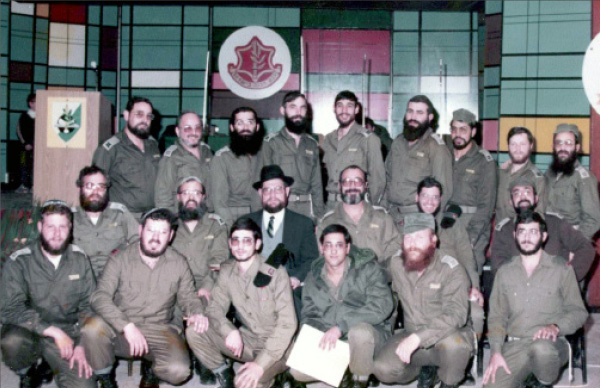

Military Shlichus
As a senior military chaplain, R’ Yaakov Shmueli was very involved in mivtzaim and was a big help to shluchim who worked with IDF soldiers. * The story of an officer in the army (of the Rebbe).

One year, a few days before Purim, the weather forecasters predicted a storm in the north for Purim. Nevertheless, R’ Yaakov Shmueli, military chaplain, decided not to forgo the traditional Purim mivtzaim. He left his home in Rechovot on Taanis Esther and spent Purim night in Tzfas. The next day he left with some men from Kiryat Chabad, loaded down with dozens of boxes of mishloach manos. They boarded a commercial vehicle and set out on a long route throughout the Golan Heights.
“Wherever we went, we were welcomed with great respect,” he recalls.
At some bases, a minyan was organized for the Torah reading and the reading of the Megilla. At each army post they distributed mishloach manos.
The weather wasn’t good. Visibility was limited, the roads were slick and they had to drive very slowly. Yet, nobody considered forgoing a single soldier.
If that wasn’t enough, in the afternoon it began to snow. Despite it all, they managed to reach all the soldiers in the area. Then their vehicle got stuck in the snow. The sun had almost set when one of the men took out a loaf of bread he had brought with him. They washed their hands with melted snow and began their Purim meal on a highway somewhere in the Golan.
It took hours until a military half-track arrived and extricated them. They continued their Purim meal when they arrived in Tzfas late at night.
That is one of many episodes that demonstrates the energetic commitment of R’ Yaakov Shmueli, a high ranking military chaplain, who worked tirelessly on the Rebbe’s campaigns and his shlichus to bring Judaism and the wellsprings to tens of thousands of soldiers during his years of service.
A TWO HOUR WALK TO HEAR THE REBBE
R’ Yaakov Shmueli grew up on moshav Beit Yehoshua near Netanya. His parents, who emigrated from Russia, belonged to the Mizrachi movement.
In his younger years he felt drawn to the ultra-Orthodox and was friendly with religious Jews who came to the moshav’s guest house. Over the years, he related more to those groups that are more open to the broader public and help them. This led him to Lubavitch.
“In Netanya I saw the Chabad Chassidim doing Mivtza T’fillin. I heard a lot about Chabad who are mekarev Jews in such a welcoming way. I started attending Tanya classes at the Chabad house in Netanya. One of the maggidei shiur was R’ Menachem Wolpo, a shliach in Netanya. I was particularly drawn to the live broadcasts of the Rebbe that took place at night and toward morning. I would listen to them in Netanya and sometimes in Kfar Chabad. I remember one time when the broadcast began late at night. There was no public transportation and I walked for two hours from my home in Beit Yehoshua to Netanya.”
His brother Efraim also became connected to Chabad after immigrating to the US. When R’ Yaakov finished his army service, he went to visit his brother in New York and took the opportunity to visit 770.
“I saw the Rebbe for the first time and immediately felt that this was my place. I continued to spend time in 770. I learned Chassidus and got more and more involved until I joined the talmidim on K’vutza with whom I learned for about a year.”
When he returned from K’vutza he took a job teaching in the vocational school in Kfar Chabad where he worked for six years. During this period, he married his wife Rochel.
From the vocational school he moved on to becoming principal of the Chabad schools in Rechovot. By then, he was deeply rooted in Chabad.
SHLICHUS IN THE ARMY
After a few years of civilian life, R’ Shmuel returned to the army, this time as an army chaplain. He took a course for the chaplaincy as part of his reserve duty. Then he received offers from commanders who asked him to become a military chaplain on a permanent basis.
“The first one to ask me was the personnel commander in the military chaplaincy. He even recommended me to the Chief Rabbi of the IDF. I was unsure because I knew that military service entails difficulties; on the other hand, I knew that in addition to my job I would be able to do a lot of mivtzaim among the soldiers. I asked the Rebbe and after receiving his positive answer, I signed up for service as a military chaplain.”
R’ Shmueli was sent for an interview with the commander of the Nachal unit. After various questions the commander said, “You know that even the officers in Nachal sleep in tents?”
“I know.”
“How will you manage?”
“Our ancestors also slept in tents,” was his reply.
The commander did not accept this answer. “Our ancestors slept in tents but what about you?”
“I am ready for any task assigned to me,” he said tersely and was immediately accepted.
R’ Shmueli knew he would have to be away from home for weeks on end, far from his wife and children, but he also knew that he had received the Rebbe’s bracha for this important job.
“I arrived at the camp in the Golan Heights where I was assigned a tent. Despite the many hardships I experienced during my service which lasted twenty-six years, I was able to accomplish a lot and hopefully give the Rebbe nachas.”
What was your role as rav?
“My roles were many and varied. I supervised the kashrus, the maintenance of the shuls, Shabbos and holiday observance, marriage, a long list of things. A special project had to do with religious soldiers. I made sure they could receive kosher food with the required kashrus and arranged minyanim and Shabbos and Yom Tov meals in distant places.”
R’ Shmueli did many other things for the soldiers in the unit. Under him there were four military rabbis who were in charge of the soldiers of Nachal, who were spread throughout the country in bases and outposts that were far from one another. Although there were other military rabbis and chaplains who were acting rabbis in the field, he did not relax at the command base. He circulated among the bases, outposts and positions throughout the country.
“I loved talking to the soldiers and taking care of their needs. I believe that in a face to face conversation you can be mekarev a soldier more readily and enter his heart.
“Along with the connection with the soldiers, I forged a special relationship with officers and senior commanders. At meetings with officers and commanders, I would begin with a d’var Torah. If at first I thought that I was talking while they were occupied with their matters, the following story proves otherwise.
“I once started a meeting with a d’var Torah, as usual, when the unit commander stopped me and said, ‘You said that last year.’ That made me realize that you cannot know what impact you are making. I couldn’t believe that this most senior commander was listening and even remembered the divrei Torah. Of course, most of the divrei Torah were based on the Rebbe’s sichos.”
How did you combine mivtzaim with your military duties?
“Those were 26 years of mivtzaim. Mivtza T’fillin was something I did daily with many soldiers and commanders. Needless to say, I was also involved with Mivtza Kashrus, Mivtza Mezuza, Mivtza Bayis Malei S’farim, and so on. These are part of the usual activities of a military chaplain but I put a special emphasis on them.”
R’ Shmueli instilled the aspect of mivtzaim in his son at a young age. During Chol HaMoed Sukkos, while most people are going on outings and having fun, he would take his young son Itzik and go to military bases and posts on the borders. They enabled thousands of soldiers to do the mitzvos of the Dalet minim and sukka.
“One time, I went to the Nachal settlement Eli Yam in the south and I met young soldiers there who were happy to see me. I asked them whether they have the Dalet minim and they said they did. “We have grapes, dates, pomegranates, and other fruits,” they said. I was astounded by their ignorance. “And do you have a sukka?” I asked. They said yes and showed me an old, fabric tent. Then and there we built a kosher sukka together.
“The commanders did not understand where I got the strength for such dedicated work with the soldiers. Until today, I can picture the expression on a commander’s face when he saw me coming with doughnuts and bringing joy to the soldiers. ‘Since when does a military chaplain visit such an out of the way post? Are you being punished for something?’ he asked suspiciously.”
For three years, R’ Shmueli served as the rabbi of the Nachal unit until he was transferred to the Armored Corps. The job changed but the distance from home did not. The corps command center was in the Golan Heights and during training he moved south with the soldiers.
CELEBRATING PESACH IN THE MILITARY
The Shmueli family cannot forget Pesach night in the military. “For many years we held a seder in the military mess hall which was very hard,” they say. “People were jealous of us because we did not have to do any preparations, but they did not realize that we prepared the food at home and ate it later without it being heated up. This was because although the military kitchen was kosher for Pesach, it did not meet our stringencies. And taking little children to the Golan Heights and sleeping there in military quarters …”
R’ Shmueli did not suffice with a typical military seder. The very first year on the job in the Armored Corps, he convinced the corps commander, General Shlomo Yanai, to make a special event. He suggested inviting the chief military chaplain with the chaplaincy choir and the chief military chazan.
He promised the general, “Our seder will be of a different quality. The soldiers will enjoy it and learn a lot.”
“I will never forget that seder. The chief military chaplain ran the seder accompanied by the chief military chazan and the chaplaincy choir. It was enormously successful.”
THE OFFICERS THIRSTED FOR INFORMATION FROM THE REBBE
From the Armored Corps, R’ Shmueli transferred to the Arava region after being appointed as rabbi of the Arava Regional Brigade. His jurisdiction was the Jordanian border, from the Dead Sea until Eilat. The command base was near Merkaz Sapir in the Central Arava region, the area where R’ Yosef Karasik serves as the rav and shliach.
The (first) Gulf War began a short while later. As a Lubavitcher Chassid, he publicized the Rebbe’s message that Eretz Yisroel is the safest place and “the time for your redemption has arrived.” He spoke about this to soldiers and commanders.
“The desire to hear the Rebbe’s reassuring words was tremendous,” he recalls. “It was most intense the day after the first Scud missiles landed in Eretz Yisroel. That day, the commander of the Arava Regional Brigade came to my office and worriedly asked, ‘What does the Rebbe say? What will happen now? Will Israel be harmed by the war?’
“I thought I was dreaming. I knew this commander and knew that he was very far from any religious observance. He always preferred keeping his distance from the military chaplain. Of course I told him that Eretz Yisroel is the safest place and this was part of the portents of the imminent Geula.
“During those tense times, many commanders who met me during the course of patrols and meetings, wanted to know what the Rebbe says. Although this was publicized in the media, the commanders wanted every bit of information they could get from the Rebbe. I saw how the nation is eager for the Rebbe’s leadership, the responsible leadership of a Nasi. I gave much thought to the importance of my shlichus in the army, to bring the Rebbe’s message to the Israeli soldiers and commanders.”
In his various positions, R’ Shmueli opened doors that had been closed to Chabad Chassidim. Chassidim visited every base and post under his jurisdiction.
WRITING TO THE REBBE
After the Gulf War, the army focused its attention on studying the lessons to be learned from the conflict. Their main conclusion was the need to establish a Home Front Command that would coordinate all rearguard emergency efforts in a time of war. In the wake of that decision, R’ Shmueli was transferred to serve as district chaplain of the Southern Region of the Home Front Command, and later to the Central Region command center where he was placed in charge of dealing with the bodies of soldiers who fell in the line of duty.
In recent years there have been hardly any military fatalities in the center of the country, right?
“Boruch Hashem, correct, but there were times when they prepared for a worst case scenario. Saddam provided us with a lot of work. Plans were made and they trained many soldiers while I was also busy with Mivtza T’fillin, Mivtza Mezuza, etc.”
R’ Shmueli also started promoting writing to the Rebbe through the Igros Kodesh. With this too, he saw how eager people are to hear what the Rebbe has to say.
“It started with a soldier who asked me for a bracha since I am a rabbi. I suggested that he write to the Rebbe. He opened the Igros to an amazing answer. This became known among the soldiers and commanders in the camp and more soldiers came who wanted to write.
“One day, when I entered the mess hall, some officers approached me and said, ‘We heard stories about you. We will come and visit you in your office after lunch.’ I nervously asked them what this was about. They thought I was playing dumb and said, ‘You know … everyone is talking about it.’
“When they came to my office they said they heard about writing to the Rebbe and they also wanted to write. I explained to them what a Rebbe is and how you write using the Igros, and about the good hachlata you need to make first. They wrote to the Rebbe and opened to answers and brachos.
“We had an officer here who wanted to be promoted but did not get a promotion. She wanted to write to the Rebbe about this. As she poured out her heart, she added that she was married for years without having children. I suggested that she write about everything on her mind. She did so and received a bracha. A few days later she asked for a promotion once again, and her boss surprisingly agreed and recommended her for higher positions. Her series of promotions ended with the birth of a daughter.”
***
R’ Shmueli concluded his story with a great miracle that happened to him on 4 Kislev 5748 (November 25, 1987) on what became known as the “Night of the Gliders.”
A terrorist from Lebanon entered the country with a motorized hang glider. He landed near the Gibor army camp and immediately went to the entrance of the base. He hurled grenades and sprayed automatic fire at the sentry, who panicked and ran away, allowing him free entry into the encampment. He then fired his AK-47 and threw grenades into tents being used by Israeli soldiers, killing six and wounding ten, but was then shot and killed by an Israeli soldier (the battalion cook and a graduate of the vocational school in Kfar Chabad) who had been wounded.
R’ Shmueli was one of the officers on the premises:
“Bullets sliced into the tents and it was a big miracle that most of the soldiers on base were not hurt. Right after the shooting, I went to my office which was in one of the tents to see if there was any damage. I discovered that a bullet had passed through a metal filing cabinet, continued past the spot where I usually sit and penetrated a Tanach. It was a big miracle that I wasn’t sitting in my office at the time of the shooting. I’m telling you this because the Rebbe said to publicize miracles for this hastens the Geula.”
Berger. "Military Shlichus." Beis Moshiach, no. 921 (March 25, 2014).